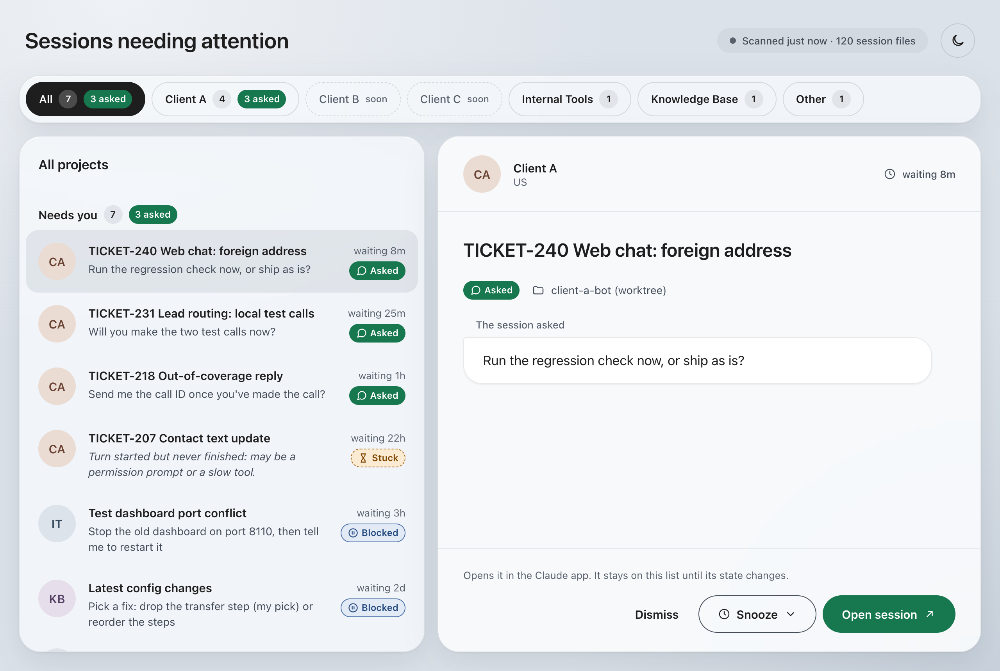
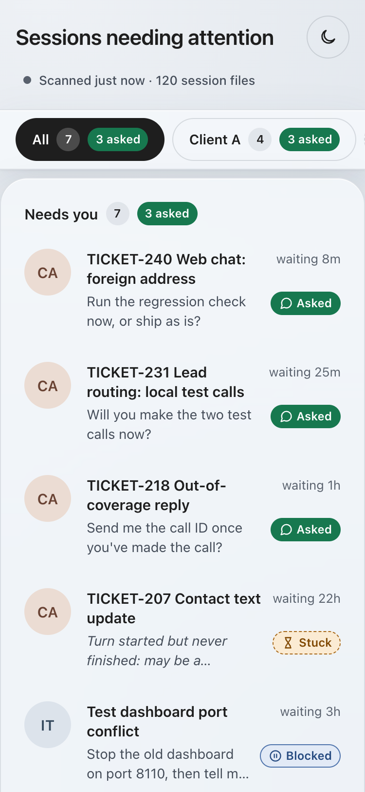
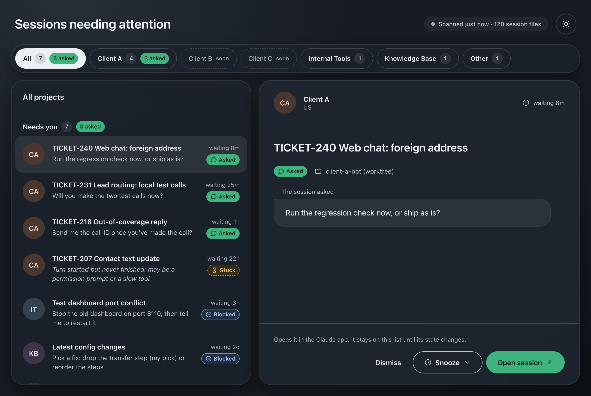
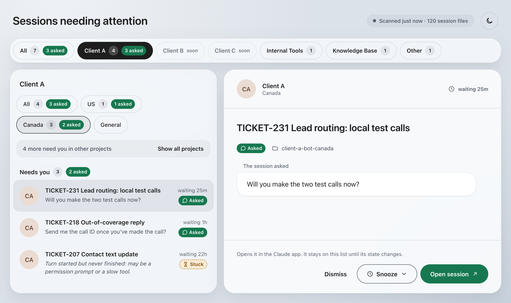
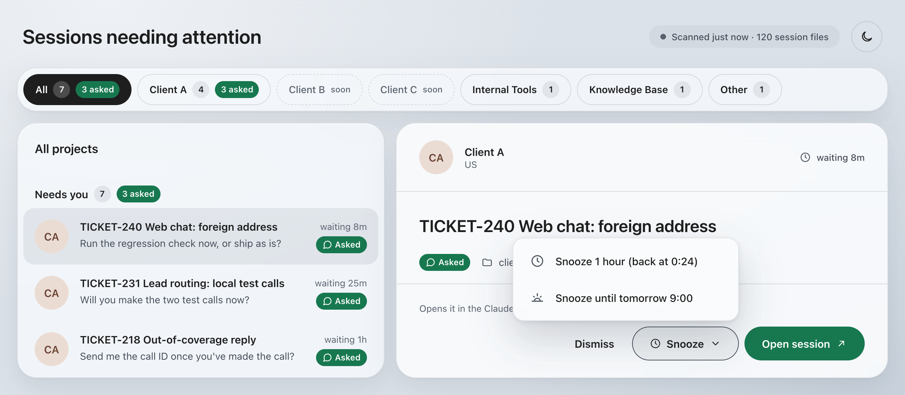

A small local dashboard that shows which Claude desktop app (Code tab) sessions are waiting on you, says what each one wants, and opens it in one click. This document has everything needed to build a project like it from scratch: the facts it rests on, the rules, the architecture, the data contracts, the security choices, the phases with their checks, and the pitfalls we hit.

When you run five to ten Claude Code sessions at once across several projects, some of them stop and wait for you: they ask a question, need you to do something outside the app (make a test call, sign in to a connector), or get stuck mid-turn. Finding them means clicking through the sidebar. Scheduled tasks make it worse: a task that runs every 10 minutes creates hundreds of sessions, and they bury the few that matter.
The job in one line: in under 3 seconds, tell me how many sessions need me, which ones and what each one wants, then get me into it with one click.
Everything below was checked against the Claude desktop app's files on macOS in November 2026. The format is undocumented internal app state and can change with any app update, so the tool must tolerate missing fields and fail loudly (§6).
~/Library/Application Support/Claude/claude-code-sessions/<account>/<org>/local_<id>.json.
Scan every account/org pair, not only the first.claude://claude.ai/epitaxy/local_<id>. Tested: open
on that link switches the app to the right session within about 4 seconds. A browser asks "Open Claude?"
the first time.| Field | Meaning |
|---|---|
postTurnSummary.status_category | blocked, review_ready, completed, or missing |
postTurnSummary.needs_action, status_detail | One line on what the session wants from you |
turnWrapUp | Present once a turn has called the wrap-up tool. Today it holds only description (the recap); needsUser, the question, is no longer saved (§14) |
cliSessionId → ~/.claude/projects/*/<cliSessionId>.jsonl | The CLI transcript. The latest type: "assistant" entry calling mcp__ccd_turn__wrap_up has the question in input.ask. The strongest signal. A later type: "user" entry with typed text (not isMeta, not only tool results) means you answered. Read only the last 1 MB |
lastActivityAt, lastFocusedAt | Epoch ms. Activity newer than your last focus means unread |
lastTurnEdgeAt, latestUserFrameAt | When the latest turn started (see the pitfall in §14). Missing on older sessions |
isArchived, scheduledTaskId, title, cwd, sessionId | Filtering, grouping and display |
Not on disk: pending permission prompts. The app keeps them in memory only, so §3 uses a "possibly stuck" approximation.
| Group | Rule |
|---|---|
| Needs you (main list) | Not archived, not a scheduled-task run, and one of: asked (the turn's wrap-up has an unanswered ask) · blocked (status_category = blocked) · stuck (below) |
| Stuck | A turn has started but not finished: lastTurnEdgeAt is present, there's no postTurnSummary and no turnWrapUp, and nothing has happened for 5 minutes. The note says it "may be a permission prompt or a slow tool" |
| Stale (collapsed) | Asked, blocked or stuck with no activity for more than 7 days: "archive or revive?" |
| Quieter | review_ready, or finished and unread (lastActivityAt > lastFocusedAt) |
| Scheduled tasks | One line per scheduledTaskId, using only its latest run, shown only when that run is asked, blocked or stuck |
| Hidden | Snoozed (until a time) or dismissed (until the session has new activity). Local to the tool |
Urgency order: asked > stuck > blocked > review > unread, newest first within each. Opening a session doesn't clear it. A blocked session usually waits on something you do outside the app, so it stays until its status changes or you snooze or dismiss it.
Calibrate with the user. In the reference build, the raw data said 216 sessions were "blocked". Removing scheduled-task runs, moving old ones to Stale, and fixing the stuck rule brought the main list to 4, which matched the user's own count exactly. Do this calibration in Phase 0, before building any UI.
~/Library/Application Support/Claude/claude-code-sessions/**/local_*.json (read-only)
│
scanner.py (launchd, every 10 s) ──► macOS notification (new "asked" only)
reads projects.json + state.json
▼
status.json
┌───────────────┼──────────────────┐
▼ ▼ ▼
A: server.py + page B: menu-bar app C: in-app pane
127.0.0.1:8790 (Swift, planned) (Claude mod, planned)
POST /state ──► state.json (Snooze / Dismiss)status.json. This avoids N copies
scanning and N duplicate notifications (an in-app pane runs separately in every session).state.json, through the server.
The scanner only reads it.project/
scanner.py reads sessions, writes status.json, sends notifications
server.py serves the page + JSON on 127.0.0.1:8790, POST /state
index.html the whole UI: inline CSS + plain JavaScript
projects.json project menu + folder → project rules
install.sh writes and loads two launchd agents
uninstall.sh removes them
.gitignore status.json, state.json, logs/ (they hold real session titles)
design/ design handoff: made-up fixture, snapshot page, screenshot scripts{ "schema": 1, "generatedAt": 1794494000000, "error": null,
"projects": [ { "id": "client-a", "name": "Client A",
"children": [ { "id": "client-a/us", "name": "Client A US" } ] },
{ "id": "client-b", "name": "Client B", "comingSoon": true, "children": [] } ],
"main": [card], "scheduled": [card], "stale": [card], "quiet": [card],
"hidden": [card + { "section": "main", "hiddenBy": {…} }],
"counts": { "main": 7, "asked": 3, "stale": 4, "quiet": 6, "hidden": 0, "scanned": 361 } }
card = {
"sessionId": "local_…",
"title": "…",
"state": "asked | stuck | blocked | review_ready | unread",
"project": "client-a",
"subproject": "client-a/us", // or null
"repo": "client-a-bot (worktree)",
"needs": "…", // may be ""
"lastActivityAt": 1794493000000,
"waitingMs": 1500000,
"link": "claude://claude.ai/epitaxy/local_…" }When error is set, the lists are empty and the page shows a red banner. It never shows a silent 0.
{ "projects": [ …the menu, in order… ],
"default": "other",
"rules": [
{ "folder": "~/work/client-a-bot", "project": "client-a", "subproject": "client-a/us" },
{ "folder": "~/work/client-a-bot-canada", "project": "client-a", "subproject": "client-a/canada" },
{ "folder": "~/work/internal-tools", "project": "tools", "subproject": null } ] }cwd with any /.claude/worktrees/… cut off, so worktrees
inherit their repo's project.~/work/tools-old must not
match ~/work/tools, so compare with folder + "/".{ "version": 1, "hidden": {
"local_abc": { "kind": "snooze", "until": 1794500000000, "at": 1794496400000 },
"local_def": { "kind": "dismiss", "lastActivityAt": 1794490000000, "at": 1794496400000 } } }Snooze hides a card until until. Dismiss hides it while the session's
lastActivityAt is no newer than the value stored at dismiss time, so any new turn brings it back.
The scanner and the page use the same rule. A missing or broken state.json hides nothing; the worst
case is a card you hid comes back.
projects.json. If it's bad, write an error status and stop.*/*/local_*.json and parse each file. Files missing sessionId, title
or lastActivityAt count as problems.error and stop.hidden.status.json atomically (temp file in the same folder, then os.replace),
so readers never see half a file.status.json and notify about new questions (§7).def classify(s, now):
summary = s.get("postTurnSummary") or {}
wrap = s.get("turnWrapUp") or {}
# A turn is in progress: lastTurnEdgeAt marks its START, and the app clears the summary
# and wrap-up then. Older sessions have no lastTurnEdgeAt; never call those stuck.
if "lastTurnEdgeAt" in s and not summary and not wrap:
return "stuck" if now - s["lastActivityAt"] > 5 * 60_000 else None # else: still working
ask = wrap and transcript_ask(s["cliSessionId"]) # latest wrap-up's input.ask, "" once answered
if wrap.get("needsUser") or ask: return "asked"
if summary.get("status_category") == "blocked": return "blocked"
if summary.get("status_category") == "review_ready": return "review_ready"
if s.get("lastActivityAt", 0) > s.get("lastFocusedAt", 0): return "unread"
return None
needs = wrap.needsUser or ask or summary.needs_action or summary.status_detail or wrap.description or ""CLI: python3 scanner.py --print prints the grouped list (your Phase 0 tool).
--no-notify skips notifications.
(sessionId, question) pair that wasn't in the previous
status.json, so a new question in the same session counts. Hidden cards count as already seen, so
a snooze ending doesn't notify.osascript, with the text passed as argv (on run argv … display
notification (item 1 of argv) …), never interpolated into the script.osascript notification opens Script Editor. A native menu-bar app
can post its own notifications instead.A stdlib ThreadingHTTPServer. Routes: GET / (the page), /status.json,
/state.json, /health, and POST /state, plus a fixed list of the installed
app's files from pwa/ (manifest, service worker, icons; added 2026-11-12). It's small, but it serves real
session titles and accepts writes, so:
| Guard | Why |
|---|---|
Bind to 127.0.0.1 only | Nothing on the network can reach it |
Host must be 127.0.0.1:8790 or localhost:8790, otherwise 403 | Stops DNS rebinding: a web page can't read status.json through a hostname that resolves to 127.0.0.1 |
POST requires Origin to be the page's own origin | A cross-site page can't forge Origin |
POST requires Content-Type: application/json | Forces a CORS preflight, which the server never answers, so simple cross-site form posts fail |
| Body of 2 KB or less; strict validation | The sessionId must match ^local_[A-Za-z0-9_-]{1,80}$; a snooze until must be in the next 8 days; the action must be snooze, dismiss or restore |
| Lock plus atomic write; prune old entries | No torn files. Ended snoozes and dismissals older than 90 days are dropped, with at most 1,000 entries |
Cache-Control: no-store, nosniff, no-referrer | Fresh data, no content sniffing, no leaking URLs |
Quiet logs: skip routine 2xx lines, because the page polls every 5 s. If status.json doesn't exist
yet, serve an error object so the page can explain.
Installed app (PWA). The page can be installed from Chrome or Safari (Add to Dock). Its service worker
caches only the page shell (/, which holds no session data), network first, so the window still
opens while the server is down and shows the red "Can't reach" banner. It never caches /status.json
or /state.json. The Dock badge shows the same count as the tab title, and a dot for "(!)". The CSP
adds manifest-src 'self' and worker-src 'self'.
claude:// link). Only the first card's Open is a filled
primary; the rest are outlined, so there's one primary per screen. Snooze and Dismiss are text buttons.localStorage (wrapped in try/catch). Arrow,
Home and End keys move through the menu.
pageRefreshSeconds in config.json, served by GET /config.json) and when the tab becomes visible again. If generatedAt is more
than 3 minutes old, the header turns red: "Scanner hasn't run for 9m".textContent, never innerHTML, because titles
are data. Only render claude:// links.window.__STATUS_SOURCE__ is a function, the page renders its data instead
of fetching. The design snapshot (§11) uses this to run from disk with made-up data.install.sh writes two LaunchAgents into ~/Library/LaunchAgents and loads them with
launchctl bootstrap gui/$(id -u). It's safe to run again (it boots out first).
local.sessions-attention.scanner ProgramArguments: python3 -I scanner.py
StartInterval 10 (scanEverySeconds in config.json), RunAtLoad
local.sessions-attention.server ProgramArguments: python3 -I server.py
KeepAlive, RunAtLoad
both: WorkingDirectory = project folder, stdout/stderr → logs/<name>.log, plutil -lint before loadinguninstall.sh boots both out and deletes the plists. Use an absolute python3 path (from
command -v python3 at install time), because launchd has a minimal PATH. Choose a free
port first; the reference build found 8769 in use and took 8790.
The page was redesigned through a design handoff before Phase 2. Rules applied (from the "design tips" posts on digitalzoomstudio.net):
#1E1E1E).The first version broke two of these rules, which is why it was redesigned: every card had a filled black Open button (14 primaries on one screen), and the buttons were 36 px tall.
How the design handoff was packaged (reuse it):
make_handoff.py writes a made-up status-fixture.json. Its times are relative
(*AgoMs) and rebased on load, so the page never looks out of date.__STATUS_SOURCE__ hook, so it opens
from disk. ?state=normal|empty|late|error shows each page state.shoot.py (Playwright) takes light and dark screenshots of the snapshot: desktop, phone, empty,
scanner-late and error.DESIGN-HANDOFF.md covers the purpose, today's page, hard constraints, the rules, the asks, the data
contract, real text lengths and what to send back. It's zipped for upload.Each phase ends with the user's check before the next one starts.
| Phase | Build | Done when |
|---|---|---|
| 0. Scanner (read-only) | scanner.py --print, .gitignore first. Check that the claude:// link opens the right session (watch the target's lastFocusedAt change, then switch back). Test the error paths: an empty folder and unreadable files | The printed list matches the user's own count |
| 1. Browser page | server.py, index.html, notifications, install.sh / uninstall.sh | It runs from launchd; the count matches the app; a test notification appears |
| 2. Projects, Snooze, Dismiss | Design handoff first. Then projects.json in the scanner, the new page, POST /state and state.json | Each project's list matches the app; Snooze and Dismiss survive a restart |
| 3. Menu-bar count (planned) | A native Swift NSStatusItem app built with swiftc: "⚠ N", one row per session that opens it, "Open dashboard". Read-only. Can post its own notifications | The count matches the page; clicking a row opens the session |
| 4. In-app pane (planned) | A Claude Code "mod" that reads status.json on a timer and draws a list beside the chat. It never scans or notifies | The pane shows the same list as the page in any session |
About the in-app pane (mods), as researched:
https: links as
clickable, so a claude:// link won't work. Check before promising Open buttons; otherwise ship a
read-only list.projects.json error
(missing, bad JSON, unknown project, sub-project under the wrong parent) each give a banner.tools-old), and the default
project.Host; 403 for a POST without a matching Origin; 415
for a non-JSON body; 400 for a bad sessionId or an until out of range; a POST that
round-trips into state.json.launchctl list, a fresh status.json from the
agent, and the server listening on 127.0.0.1 only (lsof -iTCP:8790). Ideally, check again after a
real logout and login.turnWrapUp.needsUser stopped being saved
(none of 18 wrap-ups had it), so "asked" silently never fired: a session waiting on a yes/no showed nowhere,
because the app's own summary called it completed and you had already looked at it. Read the
question from the transcript, and check field names against real files whenever a state's count sits at 0.lastTurnEdgeAt marks a turn's start, not its end. The first stuck rule
(latestUserFrameAt > lastTurnEdgeAt) flagged 32 long-finished sessions, because older sessions
don't have the field at all. The reliable signal is "edge present, and no summary or wrap-up yet".generatedAt) and say so.swiftc,
Python version) and the mod capabilities before putting choices to the user.status.json, state.json and
logs/ hold real session titles, which can include customer or ticket details.osascript as argv.textContent only. The server checks Host and
Origin and validates every write.| # | Decision |
|---|---|
| 1 | The main list is asked, blocked or stuck. Review-ready and unread go in a quieter section |
| 2 | Anything blocked or stuck for more than 7 days goes in a collapsed "Stale: archive or revive?" section |
| 3 | "Possibly stuck" means a turn started but didn't finish, with 5 minutes of quiet. It's in the main list |
| 4 | Opening a session doesn't clear it. Snooze (1 h / until tomorrow 9:00) and Dismiss-until-it-changes, both stored locally |
| 5 | Scheduled tasks show as one line per task, latest run only, and only when that run needs you |
| 6 | Local sessions only, every account/org folder |
| 7 | Card: chip, title, project or folder, time waiting, "needs" line, Open. No transcript preview |
| 8 | A count is always visible. Notify only on a new question, with the title only |
| 9 | Python standard library only; one static HTML page |
| 10 | One scanner writes status.json. All displays only read it |
| 11 | Displays: browser page (built), Swift menu bar (planned), in-app pane (planned, read-only) |
| 12 | Server on 127.0.0.1:8790 only. Start at login with launchd; uninstall.sh removes it all |
| 13 | Snooze and Dismiss only in the browser page, the single writer |
| 14 | No archive button. The tool never changes anything in the app |
| 15 | A red banner instead of a count when the format looks changed or projects.json is broken |
| 16 | The project menu with sub-projects is driven by projects.json. Folder rules, longest match wins |
| 17 | Design first through a handoff with made-up data, then build |
| 18 | No git commands from the assistant. A .gitignore exists from the first file |
All from the snapshot page with made-up data.


